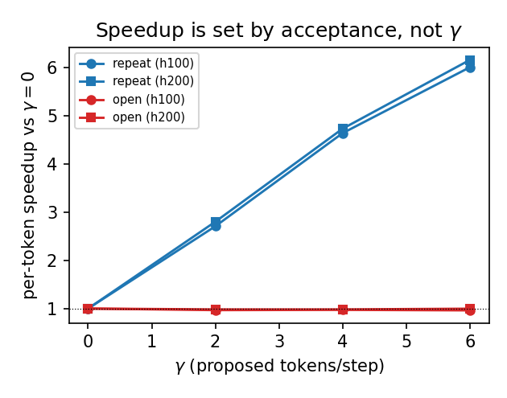
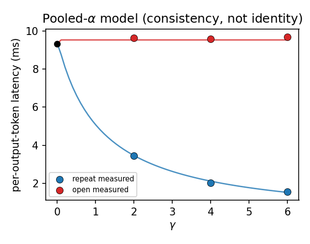
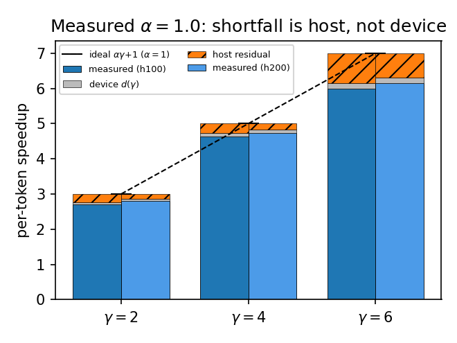
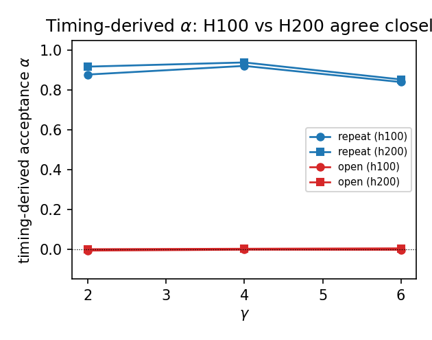
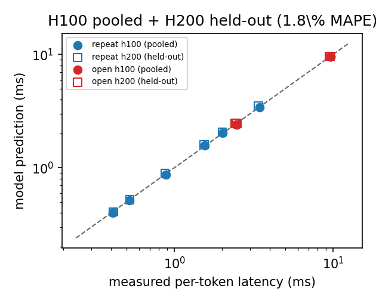

The Whole Story in One Minute
Speculative decoding proposes γ cheap draft tokens, then the big model verifies all γ+1 positions in a single forward pass and keeps the longest accepted prefix. The classic analysis says: you saved forward passes, so latency falls by the number of tokens accepted. That analysis quietly assumes the cost being saved is GPU compute. On a modern serving engine at the small batches that dominate latency-sensitive serving, the dominant cost is instead a host/scheduler term — the CPU dequeuing the batch, managing paged KV, building kernel arguments, and issuing launches — which is paid exactly once per step regardless of how many tokens that step emits. That is the cost speculation actually amortizes.
1 · One equation, two opposite regimes
The per-output-token latency is the fixed verify-step time divided by the accepted-token count: pot(γ) = t_ver / (αγ+1). The engine counter pins acceptance directly: on the ‘repeat’ workload α=1.00 (every drafted token is accepted), so the host term spreads over many tokens — up to a 6.2× speedup. On ‘open’ α→0 (≤0.020), so the same host term is spread over ≈1 token — 0.98×, no speedup. The only thing that changed is acceptance, and it was read from a counter, not inferred from timing.
2 · The textbook view counts the wrong cost
The acceptance-blind device-pass model predicts a (γ+1)× speedup whether or not the drafts are accepted. It is tolerable on the repeat workload (8.4% error, where acceptance happens to be near 1) but collapses on the open workload (77.5% error), because there the device-pass count it relies on never falls. Overall it errs by 43% mean — it counts forward passes when it should be counting host steps.
3 · Verify is almost free in this regime
Verifying γ+1 positions instead of one costs only 2.2% more GPU time at γ=6, and that number comes from a frozen roofline predictor, not fit to these cells. In the memory-bound decode regime the projection GEMMs stream the whole weight set regardless of the tiny row count, so adding a few rows barely moves the step. The verify step is essentially the baseline step — which is precisely why the divisor (acceptance), not the proposal count, governs the speedup.
4 · Acceptance transfers across GPUs
Acceptance is a property of the workload (the n-gram hit rate of the token stream), so it should not depend on the GPU. We calibrate one α per (workload, γ) on H100 only and use it unchanged to predict H200 (whose own baseline is measured) — a genuine held-out cross-SKU ratio-transfer test — reaching 1.8% mean MAPE over 12 cells. A simple acceptance-free transfer baseline reaches a comparable 2.4% on the same cells, so we position the contribution as the host-amortization decomposition (which fixed cost is saved, and why open is slightly slower), not accuracy supremacy. (A prior leaky column that pooled α over both SKUs was corrected.)
Three Ideas Before the Result
No background is assumed. Three ideas are enough: how a draft-verify cycle works, why the dominant per-step cost on real hardware is a host term and not GPU compute, and what the textbook speedup model assumes.
The draft-verify cycle
With γ proposed tokens, the target model runs one forward pass over the γ+1 candidate positions (the current token plus γ drafts). Verification keeps the longest prefix that matches the target distribution; under greedy decoding it keeps every draft that matches the target's argmax. If a fraction α of drafts is accepted on average, the cycle emits αγ+1 tokens. This study uses n-gram (prompt-lookup) drafting, which copies candidate tokens from the prompt/history and so has zero draft-device cost — making the cycle almost purely one target forward pass plus one host step, the cleanest possible instance of the host-amortization regime.
The per-step cost is a host term, paid once per step
Engines such as vLLM and Orca run an iteration-level scheduler: every decode step the CPU dequeues the running batch, updates sequence state, manages paged KV blocks, builds per-layer kernel arguments, and issues launches. In eager execution this host/scheduler work sits on the critical path, and at the small batches that dominate latency-sensitive serving it exceeds the GPU compute of the step. Crucially, a draft-verify cycle pays this host term exactly once — one scheduler iteration, one batch update, one launch sequence — regardless of how many positions it verifies.
One draft-verify cycle
proposes γ tokens, verifies γ+1 positions in a single forward passPays the host term once
one scheduler iteration + one launch sequence, whatever γ isEmits αγ+1 tokens
so the per-token cost is the fixed host step divided by accepted tokensWhat the textbook speedup model assumes
The canonical analysis predicts the wall-clock improvement from the expected accepted length. In its purest device-bound form it treats each target forward pass as the unit of cost and predicts pot_dev(γ) = t_ver / (γ+1) — i.e. it assumes every proposed token is accepted, so the device-pass count falls by γ+1. The structural assumption is that the cost being divided is the device forward pass, and the model is silent on a host term. That assumption is exactly what fails when acceptance is low.
A Closed-Form Per-Output-Token Model
The model writes the per-output-token decode latency under speculation as one line. Its three pieces are determined independently — none is fit to the speculative cells the model is then asked to predict.
$t_{\mathrm{base}}$ — measured directly
The no-speculation (γ=0) per-output-token step. With one token per step, the per-token latency IS the step time — the host-dominated decode step the portfolio characterizes. Taken from the γ=0 cell of the same configuration: it is the quantity being amortized, measured directly.
$d(\gamma)$ — mechanism-predicted, not fit
The small extra GPU cost of verifying γ+1 positions versus one, computed from a frozen single-GPU roofline predictor whose efficiencies come from standalone microbenchmarks. It is ≤ 2.3% across all γ and both SKUs — a device-roofline property, not a fit. Its smallness IS the host-amortization premise.
$\alpha$ — counter-measured; latency-free
Acceptance is measured directly from the vLLM engine's speculative counter, α = num_accepted_tokens / num_draft_tokens — a latency-free count never derived from the latency it predicts. This de-tautologizes the model: substituting the counter α is a genuine prediction, not a rearranged identity. The counter pins α=1.00 on repeat and α→0 (≤0.020) on open. (An earlier estimate inverted the equation for α from timing — circular by construction — now demoted to a cross-check only.)
Rearranging (1) gives the speedup over the γ=0 baseline directly, and it is governed almost entirely by acceptance:
Two limits follow. High acceptance (α→1): speedup → γ+1, the host term amortized over the full proposal. Zero acceptance (α→0): speedup → 1/(1+d) ≲ 1 — slightly slower than baseline, because the cycle still pays the host term once but emits one token and absorbs the d(γ) verify overhead. The textbook device-pass model cannot express the second limit: it predicts (γ+1)× regardless of acceptance.
The setup and the acceptance axis
All measurements are fresh runs on the PACE Phoenix cluster, NVIDIA H100-80GB and H200 nodes, vLLM with eager execution and prefix caching disabled, Llama-3.1-8B-Instruct with n-gram (prompt-lookup) speculation. Two workloads are constructed to bracket acceptance: repeat (the prompt asks the model to reproduce a passage verbatim, so n-gram lookup hits frequently — high acceptance) and open (non-repeating creative continuation, so lookup rarely matches — near-zero acceptance). Both use a 1024-token context. The sweep is γ ∈ {0,2,4,6}, batch N ∈ {1,4}, 12 warmup and 10 timed reps per cell, medians — giving 24 clean speculative cells (γ > 0) across two SKUs and two workloads, each anchored to its γ=0 baseline.
One Equation, Both Regimes
The speedup is set by acceptance, not by γ
On the repeat workload the per-token latency falls steeply with γ, reaching 6.2× at γ=6. On the open workload, the same γ values yield 0.98× — no speedup at all. The only difference between the two is acceptance; the device verify cost is identical. This is the qualitative signature of host-term amortization: the benefit tracks the divisor αγ+1, not the proposal count. The two SKUs (H100 circles, H200 squares) lie almost on top of each other, because the speedup ratio is a workload property.

Figure 1. Measured per-token speedup over γ=0 versus γ, both SKUs. The high-acceptance ‘repeat’ workload scales nearly as γ+1 (up to 6.2×); the low-acceptance ‘open’ workload stays at 0.98× — proposing tokens that are not accepted saves nothing.
One equation fits both regimes
Plotting the measured per-output-token latency (points) against equation (1) (curves) on the same axes, the host term t_base is amortized over αγ+1 tokens. The repeat curve (α=1.00) collapses toward 1.5 ms; the open curve (α→0) stays flat near 9.6 ms. Both the baseline (γ=0, black point near 9.4 ms) and the speculative points are matched by the single equation, with the mechanism-predicted verify overhead d(γ) and the counter-measured acceptance.

Figure 2. One equation, both regimes. Measured per-output-token latency (points, H100 N=1) against equation (1) (curves), with the mechanism-predicted verify overhead d(γ) and acceptance. Repeat collapses (α=1.00); open stays flat (α→0).
The de-tautologized model and its honest accuracy
We lead with the fully de-tautologized model: substitute the measured counter α into equation (1) with only the small device d(γ) — no timing-derived parameter, nothing taken from the latency it predicts. Its honest accuracy is 6.3% mean MAPE overall: 4.1% on open (the near-zero α correctly predicts ≈1×) but 8.4% on repeat, where it systematically under-predicts — every repeat cell — by 8.4% on average. We do not hide this behind a fitted α. The acceptance-blind device-pass view, by contrast, is tolerable on repeat (where acceptance happens to be near 1) but collapses on open, where it predicts a (γ+1)× speedup that does not occur — 43% mean error, 86% max.
| workload | counter α | acceptance-blind MAPE | de-tautologized model MAPE |
|---|---|---|---|
| open | →0 (≤0.020) | ~86% | 4.1% |
| repeat | 1.00 | ~8% | 8.4% (under-predicts) |
| all 24 cells | — | 43% | 6.3% |
Table 1. Per-output-token latency accuracy. Acceptance-blind is the textbook device-pass view (no acceptance input); the de-tautologized model uses the counter-measured α plus the small device d(γ), with no timing-derived parameter. The model honestly under-predicts repeat — that residual is the per-cycle host term, grounded independently below.
The under-prediction IS a host residual — grounded independently
With acceptance pinned at α=1.00 by the counter, the ideal per-token speedup is αγ+1 = γ+1 = 7.0× at γ=6. The measured speedup is 6.15× (H200) — an 11% shortfall. The mechanism-predicted device verify cost d(γ) explains only 2.3% of it; the rest is the non-overlapped per-cycle host/scheduler term. We ground it independently: the per-verify-cycle residual is 0.77 ms, only 13.3% (range 5.7%–23.5%) of the independently nsys-measured 5.78 ms host floor. So a verify cycle pays a partial extra host/bookkeeping term, not a whole second baseline floor. Both inputs — α from the counter and the floor from nsys — are independent of the spec latency, so this residual is itself a de-tautologized result.

Figure 3. The host overhead, isolated. With acceptance measured at α=1.00 (counter), the ideal speedup is γ+1 (dashed). The measured speedup falls short; the shortfall splits into a small device verify cost d(γ) (grey) and a much larger host residual (hatched) — the per-cycle host term speculation amortizes, with acceptance pinned independently of latency.
The amortized term is directly a host floor (nsys)
The premise — that there is a fixed per-step host floor inside the decode step — is measured directly. vLLM V1 runs the model in an EngineCore subprocess, so we let nsys passively trace the whole process tree and run the identical 8B decode at 1 versus 512 generated tokens; differencing the GPU-kernel-time totals cancels load, warmup, and prefill, leaving exactly the per-step decode work. On H100 (ctx≈2048) the 8B decode step is 12.2 ms = 6.4 ms GPU-kernel time + 5.8 ms (47.4%) host-exposed. On Llama-3.2-1B the GPU term falls 4.4× to 1.4 ms but the host-exposed term is essentially unchanged at 5.6 ms (within 4.0%) — the signature of a host/scheduler cost, model-size-invariant. This is the fixed floor equation (1) amortizes over αγ+1 tokens.

Figure 4. Direct decode-step decomposition (H100, eager, N=1, ctx≈2048) by differencing two nsys runs. The host-exposed term is ≈5.8 ms and essentially model-size-invariant (4.0% apart at 1B vs 8B) even though 4.4× more GPU-kernel time scales with the model — an existence proof of the fixed host floor speculation amortizes.
The counter pins acceptance; timing-derived α is only a cross-check
The engine counter is unambiguous: on repeat α=1.00 at every γ (the n-gram drafter hits every token of the copy task), while on open α→0 (≤0.020). The earlier timing-derived estimate inverted equation (1) for α — circular, since α was inferred from the very latency it then predicts — and gave α≈0.89 on repeat, below the counter's 1.00. That gap is not lower acceptance (the counter proves every drafted token is accepted) but per-cycle overhead the timing-derived α silently absorbed. We retain the timing-derived estimate only as a cross-SKU stability diagnostic (below): the two SKUs' curves overlap closely, which licenses calibrating on H100 and predicting H200 held-out — what transfers is the latency ratio, with the counter supplying acceptance independently.

Figure 5. Timing-derived acceptance α per (workload, γ) on H100 and H200 — retained only as a cross-check (the counter pins the true α=1.00 repeat / →0 open). The two SKUs' curves nearly overlap, supporting α as a workload property that transfers across hardware, which licenses calibrating on H100 and predicting H200 held-out.
Held-out across SKU — a ratio-transfer test, comparable to a simpler baseline
Calibrating acceptance on H100 cells only and applying it unchanged to H200 (whose own no-speculation baseline is measured), the model predicts the 12 held-out H200 speculative cells to 1.8% mean (4.1% max) MAPE. We deliberately do not overclaim: a fair, acceptance-free comparator — take H100's measured speedup ratio per (workload, γ) and apply it to H200's own baseline — reaches a comparable 2.4% on the same cells. We therefore frame the contribution as the host-amortization decomposition — the closed form tells an operator why the open workload is slightly slower and which fixed cost is saved, which a black-box ratio transfer does not — rather than beating the transfer on accuracy. (We corrected a prior leak: a released column had pooled α over both SKUs, letting H200 information enter its own held-out prediction; the honest H100-only number is 1.8%.) The parity plot below puts all 24 cells on a log-log diagonal: filled markers are H100 (calibration), hollow markers are H200 (held-out).

Figure 6. All 24 cells, model (equation 1) versus measurement, log-log. Filled markers are H100 (the pooled-α consistency cross-check); hollow markers are H200, predicted genuinely held-out with H100-only acceptance and H200's own measured baseline (1.8% mean MAPE). Both workloads span an order of magnitude in per-token latency and lie on the diagonal.
A Planning Tool, in Closed Form
For serving operators
Given a target SKU and workload, the model predicts per-token latency at each γ in closed form, and therefore the marginal value of proposing more tokens: that value is ≈α per extra token and vanishes as acceptance drops. On a low-acceptance workload, speculation is at best break-even (and slightly harmful via d(γ)). The lever is raising acceptance, not γ — because the host term is fixed per cycle.
For modelers
Serving-time speculation controllers empirically observe that speculative decoding can raise latency under load and tune the speculation length with goodput heuristics. This paper supplies the closed-form mechanistic reason — the host term per cycle is no longer amortized over enough accepted tokens — and predicts those regressions before deployment. The textbook device-pass model errs by 43% here precisely because it omits the host axis.
Exactly What Was Measured
The claims are deliberately bounded. Each item names a specific way the result could be over-read and the precise scope that remains valid.
- Acceptance is now counter-measured, which de-tautologizes the model — but two honest residuals remain. (a) The counter run is a separate H100 job from the timing runs (same model, workloads, γ, N, ctx, vLLM build), not an in-line read of each timed cell; reading the counter in-line, and on H200, is future work. (b) The de-tautologized model carries no explicit per-cycle host term in t_ver, so it under-predicts repeat by 8.4% (6.3% mean MAPE overall); we report this rather than fit it away, grounding the residual at 0.77 ms per cycle (13.3% of the nsys floor) — a partial per-cycle host term. Adding it explicitly is the next refinement.
- Host floor measured as an existence proof, not a t_base decomposition. The nsys split (8B = 47.4% host-exposed, model-size-invariant within 4.0% at 1B/8B) is a two-point agreement at one context (ctx≈2048, batch 1, eager); the serving t_base is at ctx=1024 (a ≈9.4 ms step vs the 12.2 ms step profiled here), so the exact host-exposed milliseconds of the serving step are not claimed. Regardless of the floor's exact magnitude, the amortization structure holds — speculation spreads whatever the per-step floor is over αγ+1 tokens.
- Eager execution only. The host term is measured fully exposed on the critical path. CUDA-graph capture overlaps part of it and would lower t_base (and thus the absolute speedup), but the amortization structure of equation (1) is unchanged — whatever the per-step floor is, speculation amortizes it over αγ+1 tokens. Quantifying the floor under graph capture is future work.
- n-gram drafting, small batch, one model, two SKUs. The study uses prompt-lookup drafting (zero draft-device cost) at decode batch ≤ 4 on H100 and H200, with Llama-3.1-8B only. Draft-model and trained-head speculation add a γ-dependent draft term to t_ver that the same model accommodates, but verifying its d(γ) across those settings is out of scope.
- Larger batches eventually make the step device-bound. As batch grows, GPU compute eventually exceeds the host term and the amortizable host fraction shrinks. The portfolio's host-floor model predicts where that crossover is; this study stays in the small-batch, host-dominated regime where the amortization is largest.
- The verify overhead d(γ) is borrowed, not re-derived here. It comes from a frozen single-GPU roofline predictor reused verbatim from the portfolio's single-GPU paper; this is a strength (no fit to these cells) but means d(γ)'s validity rests on that predictor's accuracy in the memory-bound decode regime.
The conclusions hold for Llama-3.1-8B with n-gram drafting in eager vLLM on H100 and H200, at decode batch ≤ 4 with a 1024-token context. The central finding — that the speculative-decoding speedup is the amortization of a fixed per-step host term over the accepted tokens of a draft-verify cycle, with acceptance as the divisor — is the part expected to generalize beyond this grid; it is what makes both the up-to-6.2× high-acceptance speedup and the 0.98× low-acceptance non-speedup fall out of one equation.